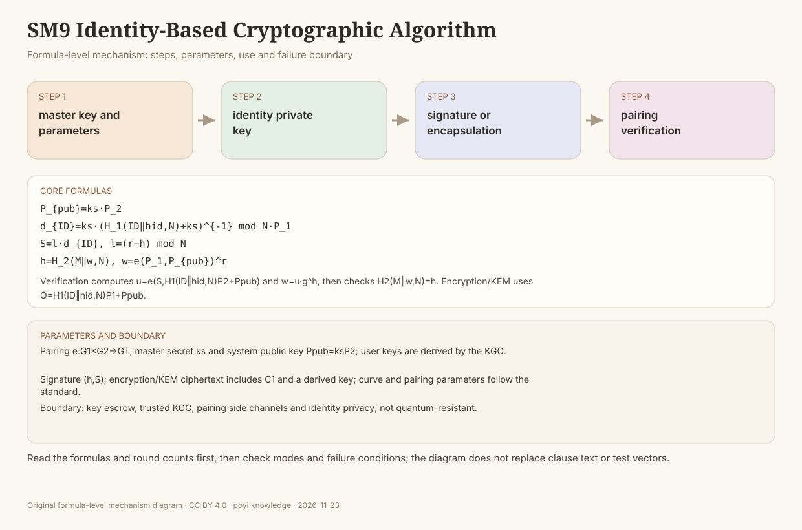
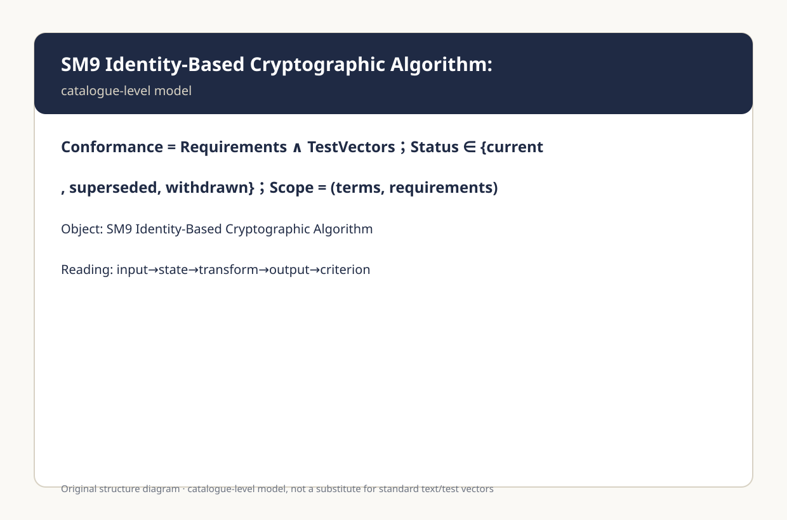

Principles
Standard: SM9 Identity-Based Cryptography Algorithm (SM9 标识密码算法). ### Pairing and system parameters
SM9 uses a bilinear pairing e:G1×G2→GT. The key-generation centre holds master secret ks and publishes Ppub=ksP2. The identity ID and hid are mapped by H1 to a scalar, and the user private key is
d_{ID}=ks·(H1(ID‖hid,N)+ks)^{-1} mod N·P1. ### Signing
The signer picks random r, computes w=e(P1,Ppub)^r, h=H2(M‖w,N) and l=(r−h) mod N, retrying if l=0; the signature is S=l·d_ID and output (h,S). ### Verification and encryption
Verification computes u=e(S,H1(ID‖hid,N)P2+Ppub), w=u·g^h and checks H2(M‖w,N)=h. Encryption/KEM maps the identity to Q=H1(ID‖hid,N)P1+Ppub, picks random r, sets C1=rQ, derives from g=e(Ppub,Q)^r through a KDF.

Why it matters
SM9 binds the public key directly to an identity and removes certificate chains; the KGC derives user private keys. It suits email, private networks and settings that want simpler certificate management.
SM9 is identity-based; SM2 is certificate-based elliptic-curve public-key cryptography and SM4 is a block cipher. SM9’s trust root is the KGC, unlike SM2’s certificate model.
Applications
- System parameters: use the standard curve, pairing and hash, and fix hid and identity encoding. 2. Key derivation: the KGC authenticates the identity, derives d_ID and delivers it securely, with update support. 3. Signing/encryption: use fresh random r; encrypt by KEM then symmetric encryption. 4. Verification: check pairings, h/S ranges and identity binding.
Do not treat the KGC as a zero-trust party; do not mix keys across hid/parameters; do not present SM9 as quantum-resistant.
A shared name may belong to an algorithm, standard, event, person or term; this entry is responsible only for its catalogue binding and does not absorb adjacent records. If versions, regions or institutions define the name differently, the differences stay side by side.

Limits & attacks
- Key escrow: the KGC can derive any user key and must be audited as a trust root; master-key compromise breaks the system. 2. Pairing implementation: timing, cache and faults in pairing can leak keys or enable forgeries. 3. Identity and parameters: inconsistent hid, curve, hash or encoding causes interoperability failure or cross-domain attacks. 4. Protocol layer: missing identity binding, C1 checks or KDF output validation enables substitution or decryption errors.
History
SM9 entered GM/T 0044 in 2016 and was published as GB/T 38635.1/2—2020 in 2020; ISO/IEC 18033-5 also covers identity-based ciphers. RFC 8998 does not cover SM9.
SM9 signatures, key exchange, KEM and encryption are separate parts; implementations follow the claimed part and edition.
Worked example & verification
Formal model and reproduction steps
[S=\min_i S_i,\quad S_i\in{\text{密钥强度},\text{分组安全},\text{实现安全}}]
SM9 Identity-Based Cryptography Algorithm: the registered public parameters, key material or randomness, and message are mapped through the stated transformation to an output checked against the registered criterion. The worked example is a structural reproduction, not a new test vector; parameter ranges, standard versions and implementation details remain source-bound.
References
- Wikipedia search entry for SM9 标识密码算法. https://zh.wikipedia.org/w/index.php?search=SM9%20%E6%A0%87%E8%AF%86%E5%AF%86%E7%A0%81%E7%AE%97%E6%B3%95
- Handbook of Applied Cryptography (Menezes, van Oorschot, Vanstone). https://www.cacr.math.uwaterloo.ca/hac/